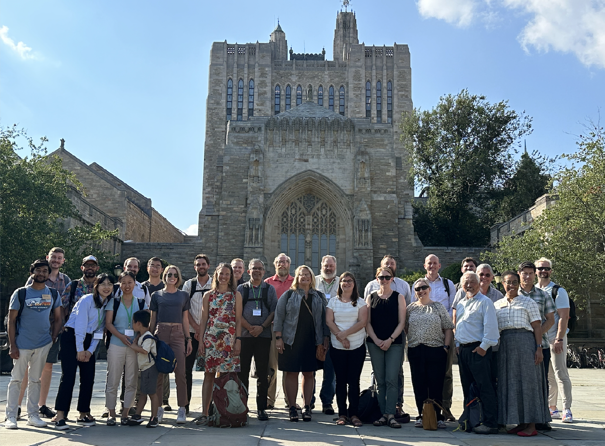
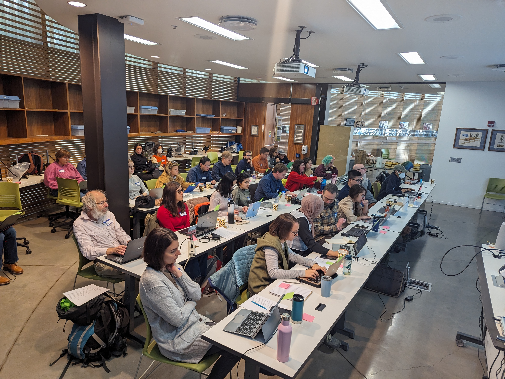
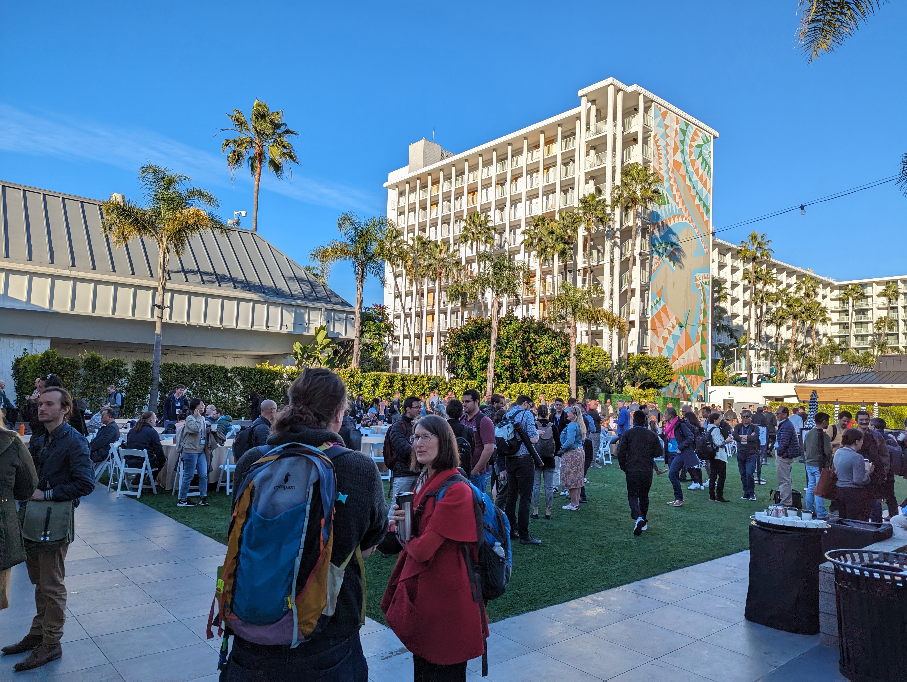
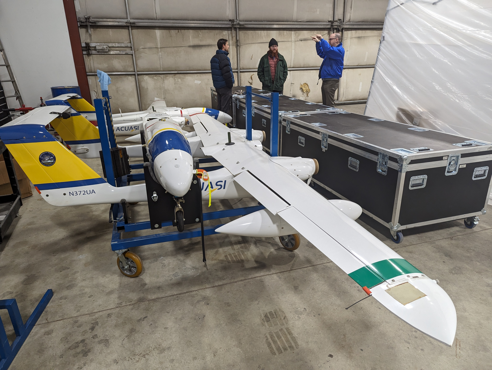
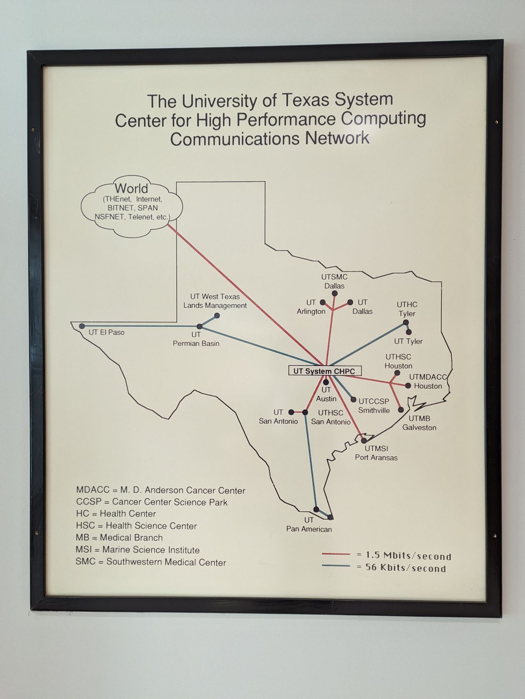

I spent a good part of my winter break updating the first GPT workshop that I co-designed in 2023. Although the fundamentals of prompt-writing haven’t changed much, the broader AI landscape has exploded.
Each week, I’m staggered by new developments and by the sheer number of AI platforms now available for chat, scholarly research, code generation, and image or video creation. Dozens of competing platforms are vying for monthly subscription fees—often around $20 a month.
Questions persist about how these AI systems are built, including the critical issue of what data they are trained upon. Meanwhile, there is growing uncertainty about how AI might reshape our daily lives at all levels of society—from the classroom to the courtroom.
Will AI create greater inequality, or can it help lift up disadvantaged groups? Already, we know that:
Energy demands for AI are skyrocketing, potentially leading to higher consumer costs.
AI received two Nobel Prizes (in Physics and Chemistry) in October, highlighting the growing influence of computer science in “classical” scientific fields.
Robotics and autonomous systems are entering a new AI-fueled renaissance. Physics-based AI foundation models and synthetic training data are enabling self-driving vehicles and backflipping androids to find their way into both civilian workplaces and military applications. In this context, Isaac Asimov’s Three Laws of Robotics continue to cast a long shadow over the discussion.
While human-piloted drone warfare has already reshaped conflict between Ukraine and Russia, fully autonomous systems inch closer to becoming operational on the battlefield.
While these Fortune 500 companies keep their AI models proprietary, the Chinese startup DeepSeek has open-sourced theirs, trained on commodity hardware. Remarkably, DeepSeek’s technology can run on personal computers or mobile phones, with performance reportedly rivaling models from Google, Meta, and OpenAI.
If these developments continue, it may mean that AI remains accessible even to those without substantial resources. However, as investors increasingly focus on autonomous systems (robotics and androids) and drug development, questions of data extraction and privacy in the U.S. remain largely unregulated. New legal protections, such as an AI Bill of Rights, and broader AI strategies from state and federal governments are sorely needed.
In the last twelve months I travelled more than any other year in my life. In parts post-COVID travel reauthorization and the desire to meet in-person again and the expansion of my professional network during COVID led to multiple invitations. The near universal need for shared cyberinfrastructure and growth of team science over the last four years also led to new funded research projects for me through CyVerse and ICDI.
Below, I summarize the trips and other professional meetings (22 in total) as they relate to AI, digital twins, and open science.
One of our goals in attending AGIC is to spread awareness of University of Arizona resources, like CyVerse, and our forthcoming Arizona Data Commons project in collaboration with the OpenStorageNetwork. For those who are interested, I already have data storage resources to support remote sensing data for the state of Arizona in the CyVerse data store.
In September of 2023, Nirav and I visited Yale to meet with researchers working to expand a national infrastructure for monitoring natural methane emissions. Natural methane sources are emissions that originate from marshes and bogs as well as from agriculture, i.e., water intensive farming (e.g., rice) and livestock grazing. In contrast, point-sources of methane emissions, such as leaking gas wells, are specific, identifiable locations—often resulting from human activities where methane is released into the atmosphere.

The proposed observatoy would have been a compliment to the existing NEON and Ameriflux eddy-covariance networks. Unfortunately, this proposal was not funded and is again delayed.
In my daily work, cyberinfrastructure is more 0 and 1 than it is laying fiber optic cable or big iron servers and firewalls. The WestNet group included CIOs, CSOs, CTOs, DOTs, IT, DevOps, and Cloud managers from Internet2, SunCorridor & The Quilt. It was interesting to learn about the physical infrastructure side of cyberinfrastructure for several days and to gain new insight into how the physical grid of the research internet works nationwide.
As we approached the end of our NSF collaborative research award to update legacy software for dendrochronological research, we hosted a summit on the state of the scientific software used by the dendro community. Principal Investigator's of OpenDendro, Kevin Anchukaitis and Andy Bunn, brought a group of technically saavy dendrochronologists to the Laboratory of Tree Ring Research, where the science of dendrochronology was born, to learn more about the work we've achieved.

I am so proud of Ifeoluwa Ale's work to write the first Python package dplPy for time-series analysis in tree rings based on the dplR packages by Andy Bunn, and legacy FORTRAN77 dpl program.
CyVerse has been featured at the PAG meeting in San Diego for the last 16 years. This year however, the project began to show its change of direction. For the first time, we did not host a table in the vendor space. Instead we only held an early morning session on AI.

Nirav and I presented on the new AI tools built by the CyVerse team to leverage open source large language models (LLMs) in private and secure environments, on premises. My recent GPU hardware acquisitions, funded by ABOR TRIF are supporting this effort.
I have been a member of the CI-Compass Cloud Working Group for the last several years. This year, we presented our report on Cloud use for Major Facilities at the Cyberinfrastructure for Major Facilities (CI4MF) meeting in Long Beach.
Specific to the findings of our report and presentations by other speakers, the storage of scientific data on-premise (i.e., university hosted data centers), and the use of Major Facilities for research computing are massive cost-savings over commercial cloud solutions, saving tax-payers potentially billions of dollars.
I have presented every year for the last four years at the meeting. It is nostalgic and bittersweet to watch and hear how fire management has changed over the last twenty two years since I started a first career as a wildland firefighter.
Jeff Gillan and I traveled to Fairbanks Alaska to meet with our colleague Professor Peter Webley at the University of Alaska Fairbanks, where we met with the staff of the Alaska Center for Uncrewed Aerial Systems Integration (ACUASI). While the Alaskan weather greeted us with -43F temperatures, the visit was warm and productive.

This collaboration has resulted in the signing of a MOU between University of Arizona and University of Alaska Fairbanks. Both Universities are the land grant institutions of their respective state. We will exchange ideas, students and staff, around the shared interests of cyberinfrastructure, national security, UAS and sUAS, and AI.
In February, I served as a panelist for a scientific funding agency. All of the proposals focused on the use of AI, including large language models and generative AI -- which are things that were mostly unknown (at least to me) 24 months ago.
We also met with the Director of Brazil's counterpart to the US NSF, Conselho Nacional de Desenvolvimento Científico e Tecnológico (CNPq), and discussed future opportunities for Brazil-US collaborative research, similar to the synthesis centers CyVerse are currently supporting.
In March, Jeff Gillan and I hosted colleagues from Purdue, NEON (Battelle Inc), OpenTopography, and Alaska at Biosphere 2 (B2) for two nights to discuss the directions of uncrewed aerial systems research (UAS) and small UAS (sUAS). We are pursuing NSF funding for a larger data management and artificial intelligence platform for UAS derived data sets that is currently under review.
In April, Nirav and I went to the Texas Advanced Computing Center (TACC), at UT Austin, to participate in a workshop on digitalt twins and AI for civil engineering, Chishiki-AI.

Nirav and I also got [my first] personal tour of the TACC facility by director Dan Stanzione. It was incredible seeing the scale of NSF's major facility for AI and computational research. TACC will soon be the home of NSF's future Leadership Class Computing Facility, which is now breaking ground.
Challenges to EFI's cyberinfrastructure include "the development of standards and databases for transparent, open, and interoperable archiving and sharing or both forecasts and forecast workflows, and the development of shared community tools for data ingest/interoperability and for forecast workflow automation / continuous integration."
ESIIL hosted its second innovation summit, this year the theme was on environmental resilience and adaptation, and best practices of open science. Over 130 people from across the country came to Boulder to engage in new discussions around Tribal Engagement, Data Sovereignty, and to establish new working groups for synthesis research proposals.
The USDA-ARS LTAR meeting was held in Tucson at University of Arizona this year. I provided a short talk about the use of Cyberinfrastructure and Open Science to the group. This marked a decade of collaboration for me with Phil Heilman, the Director of the Southwest Watershed Research Center (SWWRC).
Earlier in February my master's advisor D. Phil Guertin, a longtime collaborator with SWWRC, retired from University of Arizona after a multi-decade career in Watershed Management (photo by Laura Norman, USGS).
In June, I attended the wrap-up of Arizona's collaborative effort on South West Expertise in Expanding Training, Education and Research (SWEETER) for AI with attendees from Western Arizona Community College and Diné College. SWEETER is a CC* funded program by the NSF.
In late June, with my wife and children we vacationed in the Jemez Mountains at my parent's home. My sister and her family live in nearby Los Alamos, about 45 minutes drive around the Valles Caldera where my PhD research took place.
In July, we travelled to Europe to visit with my wife's family friends in the Black Forest of Germany. While there we toured Switzerland and Italy, with a short stop in Copenhagen, Denmark, on the return trip.
In August, I returned to Alaska to join the ACUASI group for their annual Global Autonomous Systems Conference (GASC). The various discussion panels centered around AI, UAS air mobility, and the use of foreign built small UAS by government.
The meeting was attended by numerous dignitaries, including the Governor of Alaska, the lone US Congresswoman for Alaska, and a US Senator. All relayed their wholehearted support of Alaska as a testbed for uncrewed aerial systems research and innovation. The majority of Alaska's villages and tribal communities live in remote areas that are only connected by aircraft for much of the year.
In September, I travelled to the University of Madison to meet with a group of roboticists using AI and digital twins to build and to pilot autonomous vehicles many of which are operated in the vacuum of space and on other planetary bodies like the moon, Mars, and asteroids. The Machine Ground Interaction Consortium (MaGIC), led by Professor Dan Negrut and his Simulation Based Engineering Lab (SBEL) was a late highlight of my year travelling.
I am now helping the MaGIC and SBEL teams to train and design generative AI tools with robots, leveraging the large GPU resources from the NSF ACCESS-CI at Texas A&M (ACES).
CyVerse will be providing the cyberinfrastructure resources to the new center, in the same design as ESIIL is using, for the next 5 and hopefully 10 years.
In the last four months a new technology has grabbed online headlines: OpenAI's Artificial Intelligence (AI) ChatGPT. ChatGPT is part of a growing family of AI models known as "Large Language Models" or LLMs (). Major technology companies are now racing to catch OpenAI or to design 'extensions' and 'plugins' which use its API ().
LLMs require many thousands of hours 'training' on the largest computer systems ever built, using as much human knowledge as possible. Essentially, the model is fed the bulk of information which has accumulated on the internet, e.g., Wikipedia, scientific journal publications, digital libraries of magazines, books, movies, music, and art. Once trained and tuned, LLMs can react and respond in real-time to humans who engage in a conversation with them. However, these trainings do not allow it to be 'explainable'. No one can say how, why, or what resources caused the LLM to generate a specific response.
Whether AI like ChatGPT will be as consequential in our lives as personal computers (PCs) were in the 1980s or the release of Apple's iPhone in the early 2000s, is yet to be determined. It is more likely that LLMs will improve our lives in the same way productivity software like Microsoft Word and Excel has for office workers, or Google's search engine did in the 1990s. For what it is worth, we think LLMs are a massive leap forward, otherwise a transdisciplinary article like this would not be of interest to you.
Perhaps the main reason you may want to use an AI like ChatGPT is that it can save your most valuable asset: time. Early reports are suggesting LLMs like ChatGPT result in a >50% improvement in overall productivity (Noy and Zhang ). What that means is using an AI assistant can help you get more work done in (far) less time.
You should keep in mind that these new AI are best used as tools and assistants to help facilitate the things that you already do, and not to think or make decisions for you. The technology behind LLMs limits their capacity to 'reason' or actually 'think' - they are artificial narrow intelligence (and not artificial general intelligence or super intelligence (), like you have seen on television, in movies, or read about in science-fiction.
Amidst the gold rush of investment going into new LLM technology (early investors in Google, Apple, Facebook got rich and that is where
capital thinks AI is going), there are three AI platforms you should know about right now and suggest investigating to get beyond the hype:
OpenAI has received some of the largest investments in AI over the last five years. It was OpenAI's flagship ChatGPT that captured the world's attention with its unprecedented capabilities and a multitude of functionalities (). ChatGPT is just five months old and has already amassed over 100 million users within two months of its public release, the fastest user base growth of any internet platform in history.
Generative Pre-trained Transformer
The GPT in ChatGPT stands for "generative pre-trained transformer". Transformer models are widely used in all LLMs and can be trained on written language, spoken voices, music, images, and video.
The latest model GPT-4 which powers ChatGPT can provide responses to contextual questions, help write and debug computer code, or write creative essays, sonnets, or poetry. It has aced every major standardized test (OpenAI ). This is especially impressive given its lack of knowledge of “facts” in a traditional sense as more as statistical probabilities of relationships between words and responses.
ChatGPT uses "prompts" to create its responses. By customizing your own prompts, you can narrow down the types of responses that ChatGPT provides. This is a critical step, because ChatGPT is initially drawing from its entire network of trained information. Once you tell it to limit its areas of expertise and to respond in a specifc way it can provide contextual answers with more specificity and relevance.
Researchers have already started to create curated lists of example prompt styles. Check out this list from GitHub: search: chatgpt+awesome
What are some potential uses of ChatGPT for farmers?
Some of the most immediate uses of ChatGPT might seem mundane:
Editing text from formal emails or report writing for clarity.
Crafting messages or slogans for advertising your products at a market or on a website.
General writing example: help create an insurance claim
In just a few seconds, ChatGPT can create a checklist and write a sample insurance claim letter on your behalf
Prompt
I want you to act like an insurance advocate on my behalf. My new John Deere Tractor Mounted Combine Harvester which I purchased this season seems to have a faulty transmission. What can I do to help strengthen my claim before submitting it to my insurer Nationwide Insurance? Can you help me prepare a statement so that when I talk to the agent I can cover all of their questions?
Response
As an AI language model, I can certainly help you prepare a statement and give you some general advice on how to strengthen your claim. Here's a step-by-step process you can follow:
Gather documentation: Collect all relevant documentation, including your insurance policy, the purchase receipt for the combine harvester, any warranties, and maintenance records if available. This will help you provide evidence to support your claim.
Take photographs: Take clear, detailed photographs of the faulty transmission and any visible damage to the combine harvester. This will serve as visual evidence for your claim.
Consult a professional: Have a qualified technician or mechanic inspect the transmission and provide a written report on the issue. This will help establish the extent of the fault, the cause, and the cost of repairs or replacement.
Record a timeline: Note the dates of when you first noticed the issue, when you consulted the technician, and any communication with John Deere or the dealer where you purchased the harvester. This will help establish a timeline for your claim.
Estimate the financial impact: Determine the cost of repairs, any loss of income due to downtime, and other expenses related to the faulty transmission. This will help you quantify the financial impact of the issue.
With this information, you can prepare a statement to present to your insurance agent. Here's a template for your statement:
Subject: Insurance Claim for Faulty Transmission on John Deere Tractor Mounted Combine Harvester
Dear [Agent's Name],
I am writing to file a claim under my agricultural equipment insurance policy, [policy number], for a faulty transmission on my recently purchased John Deere Tractor Mounted Combine Harvester (Model: [model number], Serial Number: [serial number]).
I first noticed the issue on [date] when [briefly describe the symptoms or issues you experienced]. I promptly contacted a qualified technician to inspect the transmission, and their report confirmed that [describe the fault, cause, and recommended repairs or replacement]. I have attached the technician's report, photographs of the faulty transmission, and my purchase receipt for your reference.
The estimated cost of repairs is $[amount], and the issue has caused a loss of income of $[amount] due to downtime during the busy harvest season. The total financial impact of this faulty transmission is $[total amount]. I kindly request that Nationwide Insurance evaluates and processes my claim as soon as possible.
I have also contacted John Deere and the dealer where I purchased the combine harvester to inquire about any potential warranty coverage or assistance they may provide. I will keep you updated on their response.
Please let me know if you require any additional information or documentation to process my claim. I appreciate your prompt attention to this matter.
Sincerely,
[Your Name]
Other use cases for ChatGPT might revolve around asking it general questions.
Ask what types of crop varieties grow best in a specific geographic location?
Help in creating an analysis of data you have collected.
Focus in on a topic: Ask specific questions and follow up
Remember to create prompts which limit the scope of ChatGPT's response pattern
Prompt #1
I want you to respond as though you are the world's most knowledgeable farmer, rely on all of the information you can use from the United States Department of Agriculture, the Agriculture and Agri-Food Canada, the Consultative Group for International Agricultural Research, and the Old Farmer's Almanac. You will respond with informative, easy to understand responses that farmer's can read on their cell phones.
Response #1
Sure, I'm happy to help with any farming questions you may have! As an AI with access to a vast amount of agricultural knowledge, I'll do my best to provide clear, concise, and informative answers based on the sources you've mentioned. Just let me know what you need assistance with, and I'll be glad to help!
Now, ask ChatGPT a specific question:
Prompt #2
What are the best types of soil to plant corn in Iowa, and when is the optimal time of year to plant sweet corn?
Response #2
The best types of soil for planting corn in Iowa are well-drained, fertile loam or silt loam soils. These soil types provide the right balance of water retention and drainage, and they also have a good nutrient-holding capacity, which is essential for optimal corn growth.
The optimal time to plant sweet corn in Iowa is typically between late April and early May, depending on local weather conditions. It's important to wait until the soil temperature has reached at least 50°F (10°C) consistently, as corn seeds need warm soil to germinate properly. Keep in mind that sweet corn has a shorter growing season than field corn, so you'll want to choose an appropriate variety for your area and plant it within the recommended time frame to ensure a successful harvest.
Remember to check the weather forecast and local planting guides from sources like the Farmer's Almanac and the USDA for the most accurate and up-to-date information on when to plant in your specific region.
The response is still somewhat vague, but we can follow up again with a more focused question about the type of corn in a specific geographic location:
Prompt #3
What types of sweet corn are best for planting in southwest Iowa?
Response #3
When choosing sweet corn varieties for planting in southwest Iowa, it's essential to select ones that are well-suited for the local climate and have a good track record of success in the region. Here are a few popular sweet corn varieties that tend to perform well in southwest Iowa:
Bodacious (Yellow): Bodacious is a widely-adapted, high-yielding variety with excellent sweetness and flavor. It has an approximate maturity of 75 days and produces 8-inch ears with 16 rows of kernels.
Ambrosia (Bicolor): Ambrosia is known for its tender, sweet taste and bicolor kernels (white and yellow). It matures in about 75 days and yields 8-inch ears with 16 rows of kernels.
Incredible (Yellow): This variety is popular for its consistent performance, large ears, and excellent taste. Incredible sweet corn has a maturity of around 85 days and produces 9-inch ears with 18 rows of kernels.
Silver Queen (White): Silver Queen is an old-time favorite with a sweet, tender taste and large ears. It matures in about 92 days and yields 8 to 9-inch ears with 14-16 rows of white kernels.
Honey Select (Yellow): A hybrid variety, Honey Select is known for its high sugar content, tender kernels, and excellent flavor. It matures in about 79 days and produces 8-inch ears with 16 rows of yellow kernels.
When selecting a sweet corn variety, consider factors such as your preferred kernel color, desired maturity time, and any specific disease resistance you may need. It's also a good idea to try a few different varieties to determine which ones perform best in your specific location and meet your taste preferences.
To get started using ChatGPT for free, go to https://chat.openai.com/ and create an account. Paying $20 per month gives additional features and benefits.
There is also a professional form of ChatGPT which uses OpenAI's API, you pay by “token” and can explore the earlier models of GPT, and leverage many of the external platforms being developed around OpenAI (see HuggingFace below) https://platform.openai.com/. For novice users there is currently no advantage to this service but the token you get by registering with a form of payment is important for AI method # 3 below.
Create an OpenAI account
OpenAI and ChatGPT
Follow these instructions to sign up for OpenAI and ChatGPT:
OpenAI API uses an authenticated key for third-party applications and plugins. You will use your API key to power other AI platforms, like those on HuggingFace
Follow these concise instructions to find your OpenAI API key:
As with most novel technology the innovation is first seen in expert use stand alone products (e.g. ChatGPT) that must be sought out or is otherwise inaccessible to the masses. Then a popular mainstream version is released that lowers the barrier to entry, but also reduces the features. With an early investment in OpenAI, Microsoft has already integrated GPT-4 into its new Bing Search Engine. When used within Microsoft's Edge Browser Bing chat can respond interactively to your prompts. Other integrations with Microsoft's Office 365 productivity software means that you may already be using its AI CoPilot technology without knowing it.
Google was caught somewhat off guard by the release of ChatGPT. It has since released their own competitor BARD, which has much of the same functionality as Bing. While BARD initially stumbled when it was first announced, the fact that Google handles over 90% of the world's search requests and has control over such a large portion of information on the internet, requires mentioning. Like Microsoft, Google is planning on integrating BARD with their own productivity software (Docs, Sheets, Drive, etc.).
More generally, HuggingFace, with its yellow smiley emoticon logo , is an American company positioning themselves as the place to find and host GPT models, not only those by OpenAI. Thousands of start-up companies and research software engineers are using HuggingFace to feature their custom AI models - many of them for free, or by leveraging OpenAI's API keys.
As of today, there are nearly 180k trained models and 30k datasets for computer vision, audio, natural language processing, and multi-model (e.g., feature extraction, text-to-image generation), available on HuggingFace.
One of particular note is “Paper-QA” in which you can upload multiple .pdf’s or files and query it for answers and even might have it help you write a scientific review.
Most models, such as Paper-QA can be used interactively on the HuggingFace website, and many of them can be downloaded and run locally on your own hardware. Importantly, most of these are open source and freely available for reuse and modification. However, the business model is to charge you for the data processing done (computes). Often for a novice user this amounts to something like $0.02 but it is something to be aware of and track.
Create a HuggingFace Account
HuggingFace
Follow these instructions to sign up for HuggingFace:
In the coming months to years, new cell phone apps specifically designed for Farming using LLMs and computer vision platforms like those in development on HuggingFace, Google, Meta, and OpenAI will be available.
These apps will use LLM models trained on the entirety of our knowledge. They will be fine tuned for your geographic region and could provide realtime information about everything from feed or seed prices, to weather forecasts, to cell phone camera powered image recognition which can immediately identify weeds, pests, diseases, or measure crop health. These same Apps could then send that information onto other farmers in your Co-op, or request an invoice be sent to your local supply store to prepare a purchase of insecticide or herbicide, all while you're still in your tractor.
The potential for innovation using these technologies is vast, and their ability to help improve farming and agriculture are far reaching.
"Have you tried ChatGPT?" has quickly become the most frequently mentioned topic of conversation at faculty meetings and informal gatherings during the early months of 2023. ChatGPT, now just five months old has already amassed over 100 million users within two months of its public release, setting an unprecedented record for the fastest user base growth in internet history.
Figure: the Google Trends for the search term "ChatGPT".
Artificial Intelligence (AI) driven by Large Language Models (LLMs) (), such as ChatGPT, is causing disruptions in classrooms (), acing all major standardized tests (OpenAI ), and casting a looming presence over the workplace (Eloundou et al. ).
Despite the incredible achievements of ChatGPT and its relatives, they have faced skepticism due to their factual inaccuracies () and criticism for their potential to premote misogyny and racism when misused (). Regardless, these technologies will impact our lives for better and for worse, in the months and years ahead.
It is worth noting that we are likely in the early stages of a Gartner Hype Cycle (). However, current indications suggest that a new era is on the horizon, in which AI becomes an integral part of our classrooms, workplaces, and homes, whether we embrace it or not.
Despite recent calls from prominent tech entrepreneurs and scholars asking for a six month 'pause' on the development of large AI models (), it seems the genie is already out of the bottle. The allure of profits and benefits of network effects () that come from being the first to market with the most advanced AI is fueling fierce competition amongst tech giants, resulting in hundreds of billions of dollars invested in the coming year alone.
Popular culture is rife with science-fiction tales of AI spiraling out of control, enslaving humanity, or bringing about global catastrophe. Ironically, these narratives often serve as allegories or social commentary on humanity's very real history of colonialism, genocide, environmental destruction & unchecked capitalism that gave rise to western civilization, rather than purely speculative fictions. The question then arises: will AI become 'evil' independently or will it be people who create and train it to kill? The latter seems more likely.
Developing machine learning techniques can indeed have unintended consequences, even when well intentioned. Recent examples in otherwise benevolent research include: ML-powered drug discovery being reverse-engineered to create novel deadly toxins and advanced AI technology being repurposed for warfare or terrorism . Yet imposing absolute prohibitions on the development of AI could lead to worse outcomes for humanity, considering the potential benefits and solutions AI can offer to various social and environmental challenges.
Choosing to delay learning about, or engaging with this technology may also have negative consequences for you, your students, and your research.
Machine Learning models have been in use for many years, but recently, a specific family of AI known as Large Language Models (LLMs) has gained significant attention online and in the news.
LLMs utilize pre-trained neural networks built from massive datasets (e.g., the internet, Wikipedia, digital libraries, scientific publications, and print news) encompassing billions of pages of text and hundreds of terabytes of data. LLMs can also be trained on images, videos, or audio using self-supervised learning to generate artificial imagery, videos, music, and voices.
OpenAI released its first LLM in 2018, which now powers ChatGPT, DALL·E, and Microsoft's improved Bing search engine. Google's LLM, LaMDA drives BARD, its own AI chat system. Meta's LLaMa is publicly available on GitHub and is utilized in numerous open source chat projects. Meta also released a practical computer vision platform called Segment Anything Model, capable of isolating objects in any image.
Access to libraries of pre-trained models and training data for further model 'tuning' is crucial for ongoing AI development. Platforms like GitHub play a vital role in the AI ecosystem by providing version-controlled code and a space for idea sharing.
Another essential component of this AI revolution is the American start-up HuggingFace. AI developers use HuggingFace to publish their Apps and to share their pre-trained models. As of April 2023, HuggingFace hosts over 173,000 free AI models, the most of any platform.
Table: Dominant LLM models currently in public use
Bi-directional Encoder Representations from Transformers (BERT) - is a family of masked-language models introduced in 2018 by researchers at Google , (Devlin et al. )
ChatGPT - OpenAI's general purpose LLM
CoPilot - GitHub (Microsoft/OpenAI) AI co-programmer, natively integrated as an extension in VS Code or GitHub CodeSpaces
Generative Pretrained Transformer (GPT) - are a family of large language models, which was introduced in 2018 by the American artificial intelligence organization OpenAI . (Radford et al. )
GitHub - the most widely used Version Control infrastructure, owned by Microsoft and natively integrated with OpenAI
DALL·E - OpenAI stable diffusion image generation model
HuggingFace - library for open source AI models and apps
Large Language Models (LLMs) - is a language model consisting of a neural network with many parameters (typically billions of weights or more), trained on large quantities of unlabelled text using self-supervised learning ()
Language Models for Dialog Applications (LaMDA) - Google's general purpose LLM
Latent Diffusion Model (LDM)() - machine learning models designed to learn the underlying structure of a dataset by mapping it to a lower-dimensional latent space.
Large Language Model Meta AI (LLAMA) - Meta's general purpose LLM
MidJourney - popular image generation platform (proprietary), which is accessed via Discord
Neural networks - ()() - are similar to their biological counter parts, in the sense they have nodes which are interconnected. Rather than string-like neurons and synapses in biology, artificial networks are made of nodes connected by networks of 'weights' which can have positive or negative values.
OpenAI - private company responsible for the first LLMs and ChatGPT
Parameter - () is a value that the model can independently modify as it is trained. Parameters are derived from the training data upon which the model is trained. The number of parameters in the newest LLMs are typically counted in the billions to the trillions.
Segment-Anything (Meta) - is a recently released image and video segmentation technology that allows you to 'clip' a feature from an image with a single click.
Stable Diffusion - computer vision models for creating images from text
Tuning - the process of refining models to become more accurate
Weights - are the value by which a model multiplies another value. Weights are typically determined by the proportional value of the importance of the parameters. Weights signify the value of a specific set of parameters after self-training.
The impact of ChatGPT and other LLMs on the workforce is significant, with early findings suggesting that they will affect more than 80% of workers. A notable 20% of the workforce will experience over 50% penetration of AI technology in their daily tasks (Eloundou et al. ).
LLMs and GPTs can be incorporated into productivity tasks such as writing, editing, and outlining, potentially saving advanced users over 50% of their effort (Noy and Zhang ).
Using AI co-programmers like GitHub's CoPilot powered by OpenAI GPT-4, can lead to up to 58% improved performance in writing and generating code (Peng et al. ).
In the next 5 years, AI won't steal people's job. People using AI will.
— Bruno Sánchez-Andrade Nuño (@brunosan) April 3, 2023
As AI technologies continue to advance, they will become increasingly integrated into various industries, transforming the way work is conducted. Companies will need to adapt their workflows, train their employees to harness AI's potential, and develop new strategies to remain competitive in an AI-driven world.
Should you be worried an AI is going to steal your job or make that diploma worthless?
Humanity is still decades away from an Artificial General Intelligence or Artificial Super Intelligence which can learn as humans and animals do.
Your future career will most likely leverage AI as a digital assistant. What will be critical is staying grounded by bedrock foundations around the ethical applications of AI.
Enhancing Productivity with AI
ChatGPT and its counterparts are integrated into popular productivity software. Microsoft announced integration of OpenAI and CoPilot into :simple-microsoftoffice: Microsoft Office 365, along with the new Bing.
ChatGPT's GPT-3.5-turbo and GPT-4 models can compose essays and pass advanced knowledge assessments (OpenAI ). Online education, a recent and lucrative innovation in academia, now faces challenges regarding effective remote student assessment (Susnjak ).
Attempting to modify coursework to avoid assessment techniques where ChatGPT excels or using bots to detect ChatGPT generated content may prove to be futile. Instead of engaging in a cheating arms race, why not embrace ChatGPT and other AI frameworks?
Proponents of integrating ChatGPT into educational curricula () argue that by adapting and integrating ChatGPT into the curriculum, we can develop a modern workforce empowered by AI assistants. I find myself aligned with this perspective (as does my AI text editor, ChatGPT-4).
Training the next generation of researchers to use AI effectively and ethically is a crucial aspect of graduate mentorship. As an advisor, it is important to ensure that students have appropriate access to these platforms and a comprehensive understanding of the ethical implications for their education, research, and software engineering.
Platforms like ChatGPT could potentially become the primary mentor for graduate students and postdoctoral researchers. Unlike human advisors, these AI systems are available 24/7 to address virtually any question or problem. However, it is essential to strike a balance between AI assistance and independent learning.
To achieve this balance, advisors should:
Encourage AI literacy: Provide students with resources and opportunities to learn about AI technologies, their applications, and limitations.
Teach responsible AI usage: Emphasize the importance of using AI as a tool to support research, not replace critical thinking and problem-solving skills.
Discuss ethical considerations: Foster open discussions about the ethical implications of AI in research, including issues of bias, fairness, transparency, and accountability.
Promote collaboration: Encourage students to collaborate with AI, leveraging its strengths to overcome their weaknesses and vice versa.
Stay updated: As AI technologies continue to evolve, ensure that both advisors and students stay informed about the latest developments, best practices, and potential pitfalls.
By incorporating AI into graduate and postdoctoral training while maintaining a focus on ethics and responsibility, the next generation of researchers can harness the power of AI to advance their fields while upholding the highest standards of academic integrity.
I will no longer approve graduate student dissertation proposals or dissertations unless they used ChatGPT or a similar AI to help them write part it! (With appropriate acknowledgement). Yes I am serious!
I strongly encourage faculty and research teams to explore how they can incorporate LLMs like GPT-4 into their daily work in the context of developing their own Research Objects.
ChatGPT Awesome Lists
There is an ever changing meta-list of Awesome lists curated around ChatGPT plugins and extensions.
Using progressively refined prompts or providing similar code examples can help ChatGPT better understand the coding task. This approach enables the AI to explain what the code does, why it may be dysfunctional, and how to correct it. ChatGPT can even act as a Linux Terminal.
Form an AI-powered paired-programming team
Leverage version control systems like git (GitHub, GitLab) to track changes in your code. With GitHub's free Education accounts for students and researchers, you get access to OpenAI-powered CoPilot which integrates seamlessly with GitHub's virtual machine CodeSpaces environments. CoPilot can assist in developing code in various programming languages.
Literature review and meta-analyses
ChatGPT, despite its potential for generating inaccurate information, is just one among various AI tools available for research purposes. Other tools, like Paper-QA provide a more reliable approach, relying solely on inputted textual information (PDFs) to generate contextual answers with citations. Researchers can use platforms like Paper-QA to perform meta-analyses of numerous papers in just a few seconds. These tools allow users to quickly verify the results by directly navigating to the pages where the context was extracted from, ensuring a higher degree of confidence in the generated information. By harnessing the capabilities of such tools, researchers can streamline their literature review processes and gain valuable insights more efficiently.
Stable Diffusion models are available via HuggingFace
Diffusion models have two modes, forward and reverse. Forward diffusion adds random noise until the image is lost. Reverse diffusion uses Markov Chains to recover data from a Gaussian distribution, thereby gradually removing noise.
DALL·E uses GPT to create imagery from natural language descriptions
MidJourney uses a proprietary machine learning technology, believed to be stable diffusion, along with natural langauge descriptions in the same way as DALL·E and Stable Diffusion models. MidJourney is only available via Discord, and requires a subscription for premier access after a 30-day free trial.
Segment-Anything (Meta), Kirillov et al. , is a recently released image and video segmentation technology that allows you to 'clip' a feature from an image with a single click.
Meta's Segment Anything can instantly identify objects in complex images and videos. Built on the SA-1B dataset, one of the largest image segmentation datasets ever publicly released, it saves technicians time and helps generate new training datasets for more refined computer vision model development.
By incorporating LLMs and AI tools into research and education, faculty and students can enhance their work, improve efficiency, and foster a deeper understanding of AI's potential in various fields.
Testing the new Segment Anything model of @MetaAI on UAV images acquired over Amazonian forests. Interesting results... pic.twitter.com/9a8YmxFf0x
— Dr. Matheus Pinheiro Ferreira (@mpferreira3) April 8, 2023


 HuggingFace
HuggingFace
 LLaMa
LLaMa